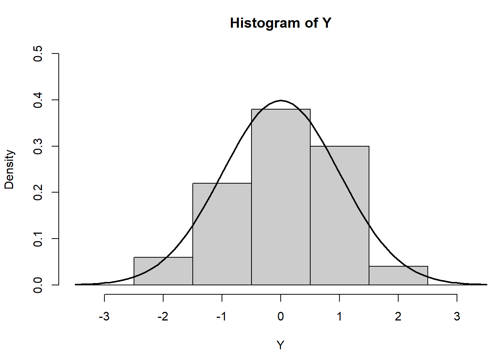

# Histogram
# Random data
# Generate 50 random data points from a standard normal distribution
Y <- rnorm(50)
# Make sure no Y exceed [-3.5, 3.5]
# This line filters out any values in Y that are less than -3.5 or greater than 3.5 by setting them to NA
# Useful for limiting the data range and focusing the histogram on a specific interval
Y[Y < -3.5 | Y > 3.5] <- NA # Selection/set range
# Create a sequence from -3.5 to 3.5, incremented by 0.1, for x-axis points
# Useful for plotting the normal density later
x <- seq(-3.5, 3.5, .1)
# Compute the normal density at each point in x
dn <- dnorm(x)
# Set the margins of the plot (bottom, left, top, right) measured in lines of text
# Here, the right margin is reduced to zero to adjust how the plot fits in the plotting area
par(mar=c(4.5, 4.1, 3.1, 0))
# Plot a histogram of Y
# `breaks=seq(-3.5, 3.5)` sets the boundaries of the bins for the histogram
# `ylim=c(0, 0.5)` sets the y-axis limits
# `col="gray80"` sets the bar color to light gray
# `freq=FALSE` normalizes the histogram, turning it into a density plot
hist(Y, breaks=seq(-3.5, 3.5), ylim=c(0, 0.5),
col="gray80", freq=FALSE)
# Overlay a line graph of the normal distribution density
# `lwd=2` sets the line width to 2, making it thicker for better visibility
lines(x, dnorm(x), lwd=2)
# Reset the margins after plotting
# Ensures that any subsequent plots have standard margins
par(mar=c(5.1, 4.1, 4.1, 2.1))